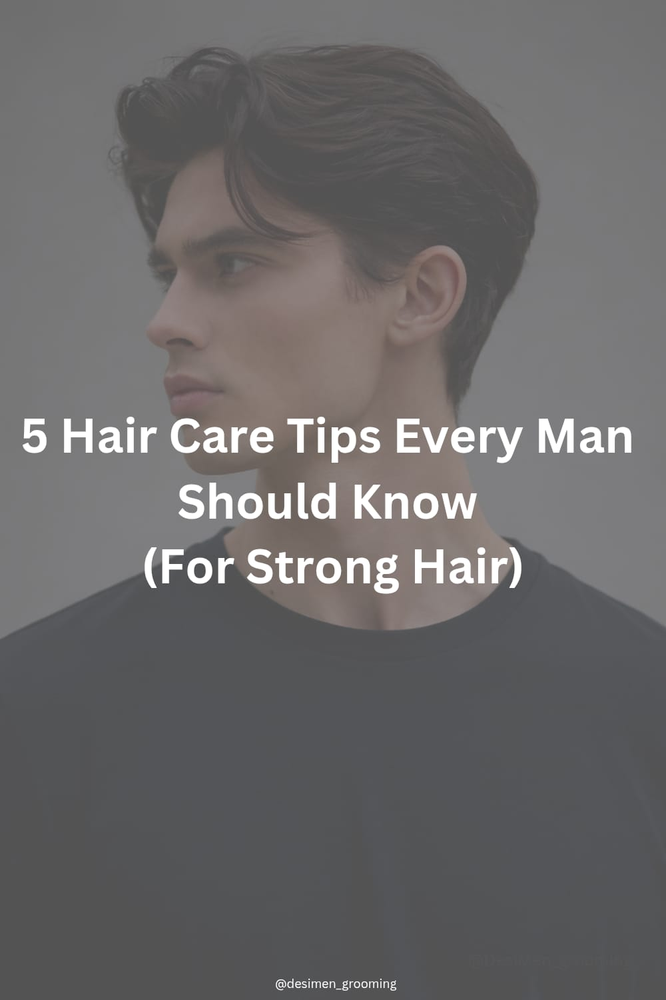

Healthy hair is an important part of men's grooming. By following a few simple habits, you can keep your hair strong and stylish.
Wash your hair 2–3 times a week using a mild shampoo. Overwashing removes natural oils from the scalp.
Hair oils like coconut oil, almond oil or argan oil help strengthen hair roots and improve scalp health.
Too much heat from hair dryers or styling tools can damage hair and make it dry.
Eat foods rich in protein, vitamins and minerals like eggs, nuts and vegetables.
Regular trims remove split ends and keep your hairstyle clean and healthy.
← View More Hair Care Tips